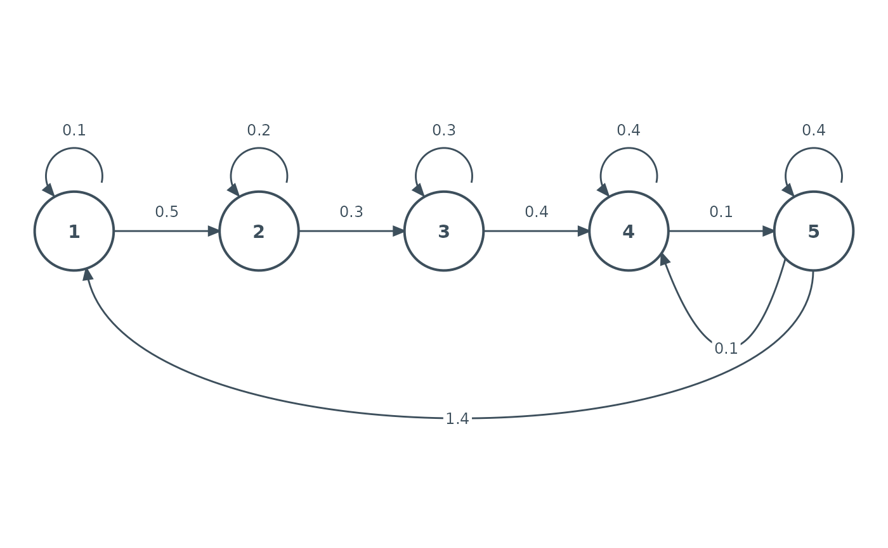
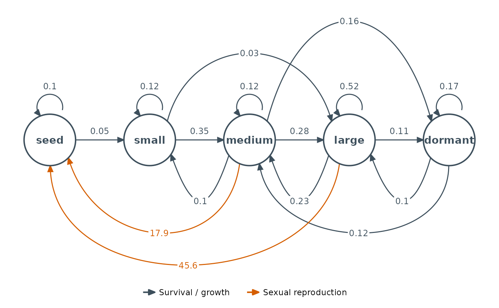
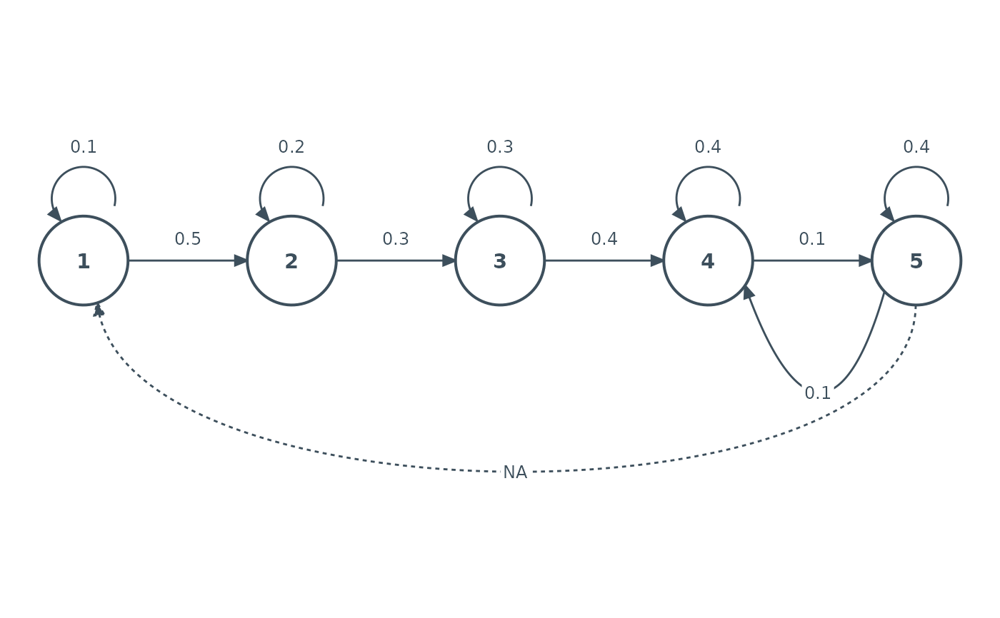
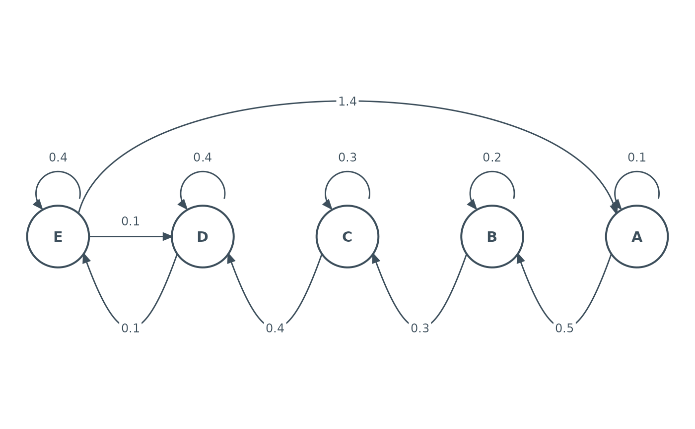
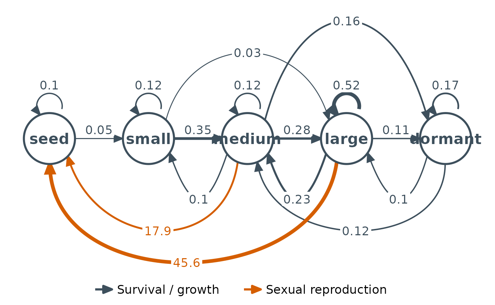

R/plot_life_cycle.R
plot_life_cycle.RdPlots the life cycle diagram illustrated by a matrix population model.
Transitions with value 0 are assumed to be biologically impossible,
and arrows are omitted from the diagram. Transition rates of NA are
shown as arrows labelled NA (dashed with engine = "ggplot").
plot_life_cycle(
matA,
stages,
title = NULL,
shape = "egg",
fontsize = 10,
nodefontsize = 12,
edgecol = "grey",
node_order = NULL,
matU = NULL,
matF = NULL,
matC = NULL,
engine = c("ggplot", "graphviz"),
...
)A matrix population model (i.e., a square projection matrix).
Not needed if matU is supplied.
Optional vector of stage class labels. If missing, it first
attempts to infer them from dimnames(matA) (or matU). If
these are also NULL, then reverts to integers 1:ncol(A).
Optional title for the plot. Defaults to NULL.
The shape to be used for the stages of the diagram. Any node
shape accepted by graphViz is acceptable. Graphviz engine only.
Size of the font used in the diagram. Graphviz engine only.
Size of the font used in the node part of the diagram. Graphviz engine only.
Colour of the arrows in the diagram. Graphviz engine only.
An optional numeric vector giving the position of each
stage in the plot, so that stages are displayed in the order
stages[order(node_order)]. Default is NULL, whereby the
order is the same as stages, or row/column names, of the matrix.
Optional survival/growth (matU), sexual
reproduction (matF) and clonal reproduction (matC)
matrices. Supply these instead of matA to colour transitions by
type. matF and matC are optional.
Either "ggplot" (default) or "graphviz".
Further options for the ggplot engine:
digitsDecimal places for arrow labels (default 2).
show_valuesLabel arrows with their values (default
TRUE).
scale_widthScale arrow width by transition value,
within each transition type (default FALSE).
coloursNamed vector of colours for "U",
"F", "C". Defaults are colour-blind safe.
type_labelsNamed vector of legend labels for
"U", "F", "C".
node_fill, node_lineFill and outline colour of stage nodes.
base_sizeBase text size in pt (default 11). Nodes, arrows and the natural plot size scale with it.
base_familyFont family.
With engine = "ggplot", a ggplot object whose
natural size (inches) is stored in attr(, "lc_size") and used by
[save_life_cycle()]. With engine = "graphviz", an object of class
grViz.
Two drawing engines are available:
"ggplot" (default)Draws the diagram with ggplot2
using a fixed layout: stages sit in a row, transitions to the next stage
are straight arrows, longer forward transitions arc above, backward
transitions (reproduction, retrogression) arc below, and stasis is a
loop above each stage. If matU is given together with
matF and/or matC, survival/growth, sexual reproduction and
clonal reproduction are distinguished by colour. The result is a ggplot
object, so it can be modified, combined with other plots, and saved as
vector graphics with [save_life_cycle()] or [ggplot2::ggsave()].
"graphviz"The original engine, which passes the matrix
to grViz in DiagrammeR (see
https://rich-iannone.github.io/DiagrammeR/) and returns an
htmlwidget. Sub-matrices are summed into a single matA.
Other visualisation:
save_life_cycle()
matA <- rbind(
c(0.1, 0, 0, 0, 1.4),
c(0.5, 0.2, 0, 0, 0),
c(0, 0.3, 0.3, 0, 0),
c(0, 0, 0.4, 0.4, 0.1),
c(0, 0, 0, 0.1, 0.4)
)
plot_life_cycle(matA)

# Colour transitions by type by supplying the sub-matrices
data(mpm1)
plot_life_cycle(matU = mpm1$matU, matF = mpm1$matF)

# Plot and label unknown transitions as NA
matA_na <- matA
matA_na[1, 5] <- NA
plot_life_cycle(matA_na)

# Change the order of the nodes and give them names
plot_life_cycle(matA,
stages = c("A", "B", "C", "D", "E"),
node_order = 5:1
)

# Larger text for slides, and arrow width scaled by value
plot_life_cycle(matU = mpm1$matU, matF = mpm1$matF,
base_size = 16, scale_width = TRUE)

if (FALSE) { # \dontrun{
# Save at natural size as vector graphics (PDF/SVG) or PNG
p <- plot_life_cycle(matU = mpm1$matU, matF = mpm1$matF)
save_life_cycle(p, "life_cycle.pdf")
# The original graphviz engine
p1 <- plot_life_cycle(matA, engine = "graphviz")
p1 %>%
DiagrammeRsvg::export_svg() %>%
charToRaw() %>%
rsvg::rsvg_png("my life cycle.png")
} # }